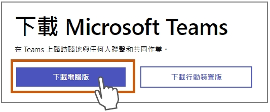
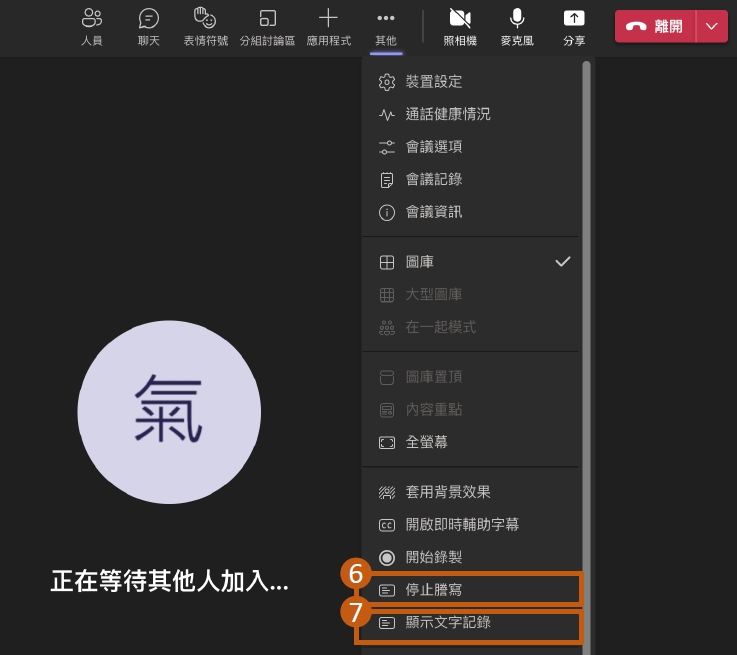

登入
登入
 請輸入正確密碼
請輸入正確密碼
 忘記密碼
忘記密碼


 首頁
首頁
 導覽
導覽
 登入
登入

 共享資源
共享資源
共享資源
O365 Teams 使用說明手冊
- 點選功能列「…其它」按鈕
- 點選功能選項「開始謄寫」按鈕
備註：會議內容謄寫功能需使用電腦版才能使用該功能

3.
點選文字記錄旁「…」按鈕，點擊跳出的「更新口語語言」按鈕
4.
選擇口語語言後按「確認」按鈕
5.
顯示會議內容文字紀錄
6.
會議結束請點選「停止謄寫」按鈕
7.

切換「顯示文字紀錄」按鈕可停止或顯示內容紀錄
8.
打開行事曆中的「會議名稱」
9.
點選「錄製與謄寫」按鈕
10.
顯示會議內容
11.
下載「文字紀錄」檔案
12.
打開「文字紀錄」Word檔案，顯示樣式範例
 手冊下載
手冊下載
方式1:行事曆/立即開會
- 點選左邊功能列「行事曆」
- 點選右邊「立即開會」按鈕

3.
輸入「會議名稱」
4.
點選「取得共用連結」按鈕
5.
依會議需求設定可點選「設定會議選項」做項目設定
6.
點選「複製icon」按鈕，複製會議連結或點選「開始會議」按鈕
7.
「會議選項」設定內容頁面，設定好後按「儲存」按鈕
8.
「會議選項」範例：誰無需先在大廳等候?選擇「所有人」，所有知道會議連結來賓可不需在大廳等候，直接進入會議室
9.
設定好後按「儲存」按鈕
10.
來賓可使用聊天功能輸入訊息內容圖示
方式２:行事曆/新增會議
- 點選左邊功能列「行事曆」
- 點選右邊「新增開會」按鈕
3.
輸入「會議名稱」
4.
輸入「與會人員mail帳號」
5.
設定會議日期和時間
6.
點選「傳送」按鈕，建立會議
7.
來賓Outlook會收到會議通知和連結，如圖示7
8.
點選建立好的會議按滑鼠右鍵
9.
顯示功能框，點選「編輯」選項
10.
可點選「複製連結」，複製會議連結
11.
依會議需求設定可點選「設定會議選項」做項目設定
12.
「會議選項」設定內容頁面，設定好後按「儲存」按鈕
13.
「會議選項」範例：允許會議聊天?選擇「已啟用」，所有來賓皆可使用聊天功能
14.
設定好後按「儲存」按鈕
15.
來賓可使用聊天功能輸入訊息內容圖示

方式3:團隊/排程會議
- 點選左邊功能列「團隊」
- 點選右邊「開會」下拉選項「排程會議」選項，內容設定方式同【方式２:行事曆/新增會議】
手冊下載
- 點選「忘記密碼」
- 輸入申請填寫的備用mail帳號(如: janechang@cwb.gov.tw)，驗證碼發送約需等1分鐘左右

3.
點選「電子郵件」
4.
輸入「驗證碼」
5.
輸入「驗證碼」後點「下一步」
6.
輸入「新密碼」
手冊下載
 回共享資源列表
回共享資源列表